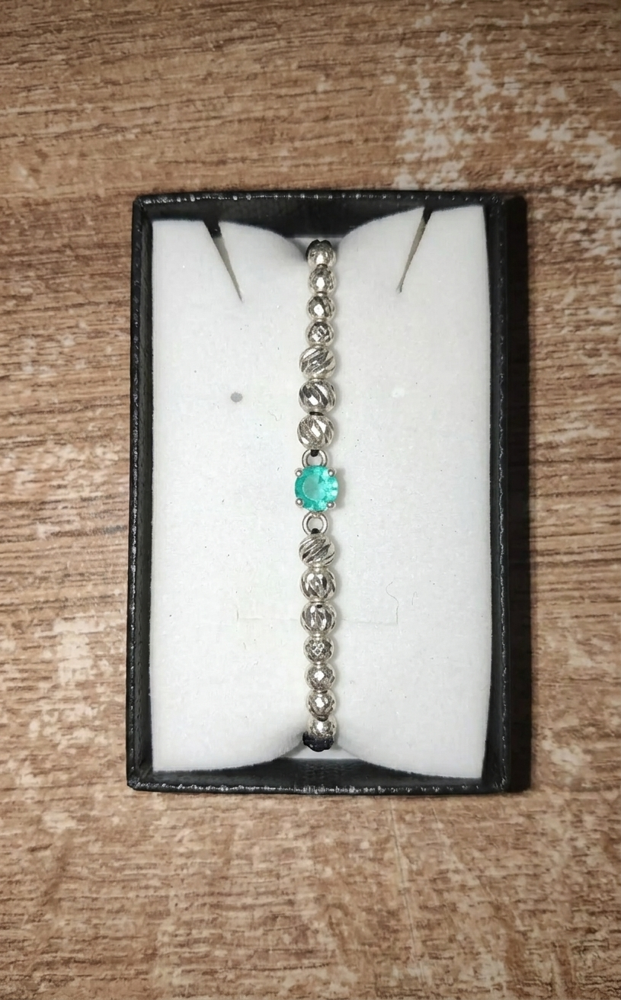
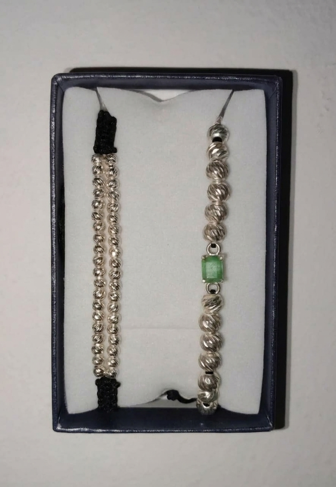
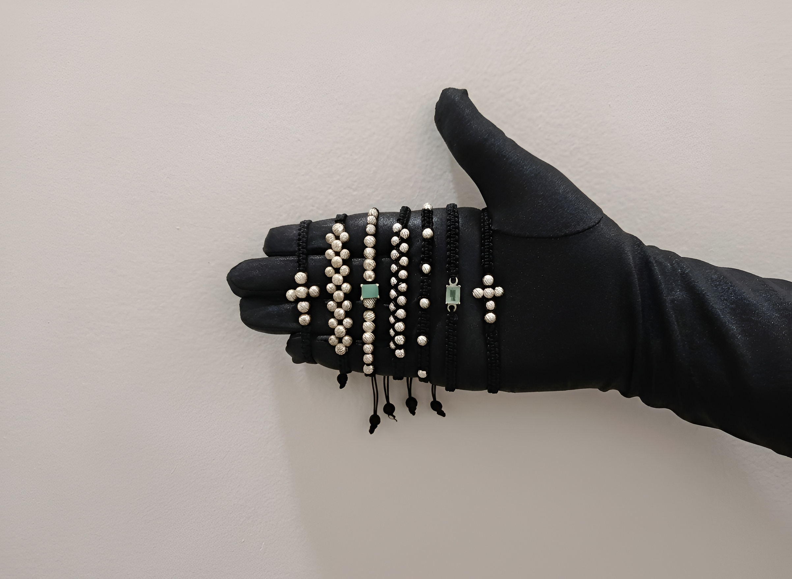

LA HISTORIA DE WEPORA
WEPORA
Una marca que comenzó con una pulsera y que busca convertirse en una historia de joyería propia.
NUESTROS INICIOS
TODO COMENZÓ
CON UNA PULSERA.
Wepora nació a partir de algo sencillo: pulseras tejidas hechas con materiales como plástico y neopreno.
Con el tiempo, el interés por la joyería fue creciendo. La plata, las piedras preciosas y especialmente las esmeraldas comenzaron a convertirse en el centro de una nueva idea.
Así comenzó el camino para construir una marca propia.


NUESTRA EVOLUCIÓN
DE LO SENCILLO
A LO ESPECIAL.
El crecimiento de Wepora ha sido progresivo. Lo que comenzó con pulseras sencillas evolucionó hacia piezas elaboradas en plata 925 y joyería con esmeraldas.
INICIO
Pulseras tejidas y piezas sencillas.
PLATA 925
Una nueva etapa dentro de la joyería.
ESMERALDAS
Las piedras preciosas toman protagonismo.
TALLER PROPIO
El siguiente paso de Wepora.
LO QUE NOS INSPIRA
CONSTRUIR
ALGO PROPIO.
Wepora nace de un interés genuino por la joyería, las esmeraldas y las piedras preciosas.
Pero la inspiración va más allá de las piezas. El objetivo es construir una marca propia, consolidarla en el mercado y hacer que Wepora sea reconocida por su identidad.
A futuro, buscamos contar con varios puntos de venta y desarrollar nuestro propio taller para fabricar nuestras joyas.


NUESTRA FORMA DE TRABAJAR
CONFIANZA
EN CADA COMPRA.
Para Wepora, una buena experiencia comienza con la información.
Buscamos que cada cliente sea atendido de manera profesional y que conozca realmente la pieza que está comprando.
NUESTRA MISIÓN
CREAR PIEZAS
CON SIGNIFICADO.
Crear y ofrecer joyería artesanal de calidad, combinando la belleza de las esmeraldas, las piedras preciosas y la plata con diseños personalizados y una atención profesional y transparente.
Buscamos que cada cliente comprenda y valore la pieza que adquiere, brindándole una experiencia de compra cercana, segura y significativa.

NUESTRA VISIÓN
UNA MARCA
QUE TRASCIENDE.
Consolidar a Wepora como una marca de joyería reconocida por la calidad de sus piezas, las esmeraldas y las piedras preciosas.
Queremos crecer, contar con diferentes puntos de venta y construir un taller propio que nos permita fabricar nuestras propias joyas.
El objetivo es que Wepora pueda convertirse en una marca reconocida por su identidad y por la confianza que genera en sus clientes.
EL FUTURO
DEL PRIMER DISEÑO
A NUESTRO PROPIO TALLER.
Wepora apenas está comenzando. Cada pieza representa un paso hacia el objetivo de crear, fabricar y construir nuestra propia historia dentro de la joyería.